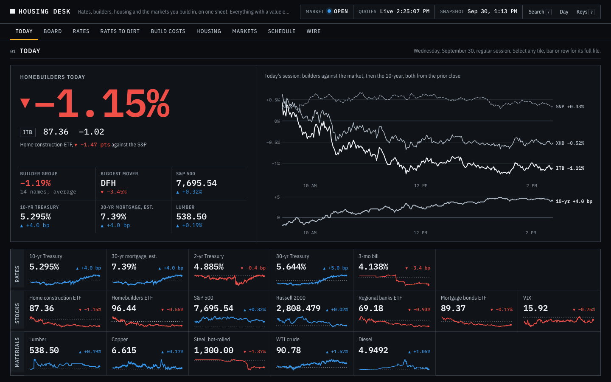
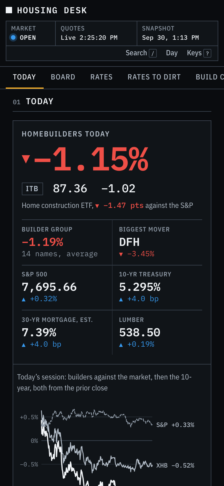
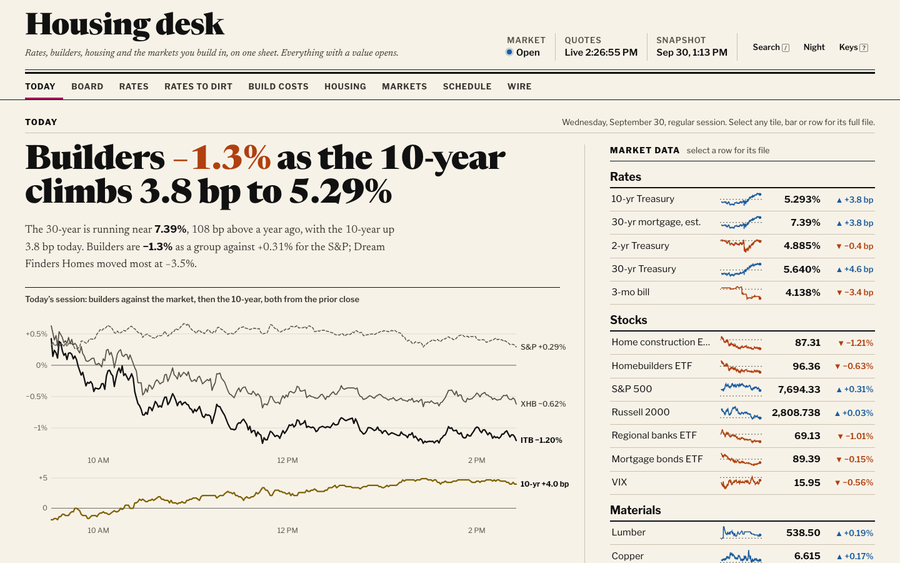
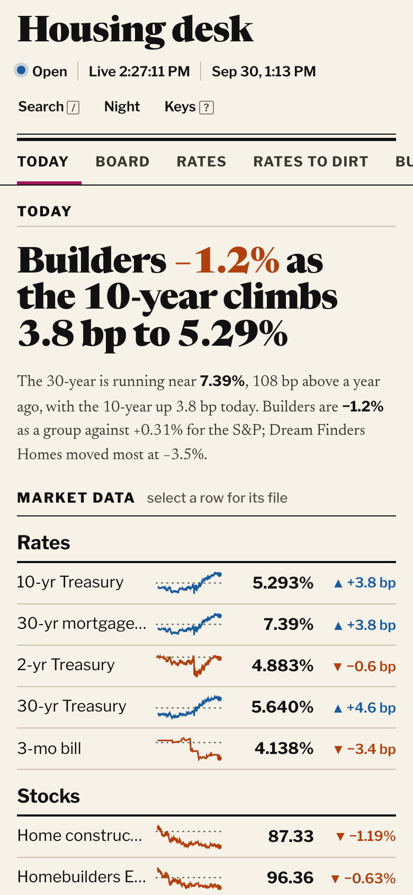
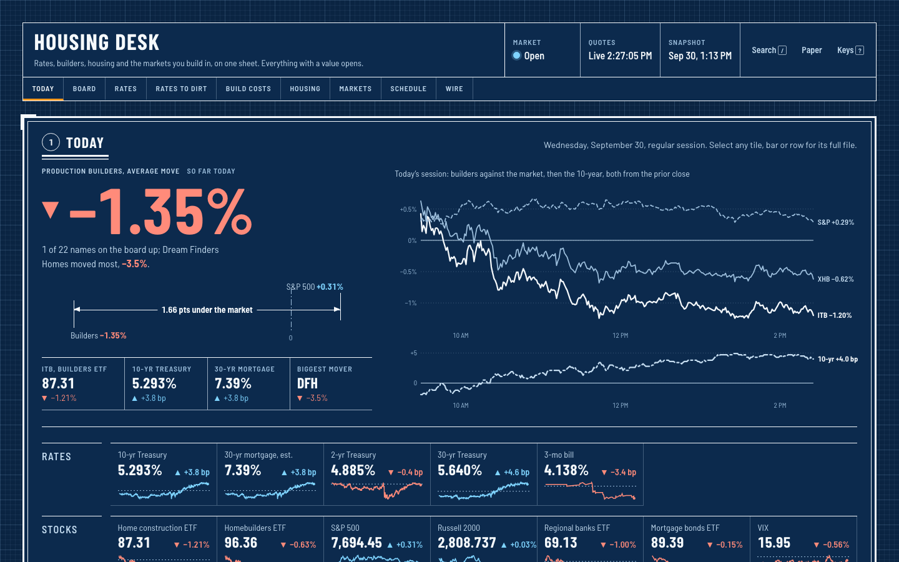
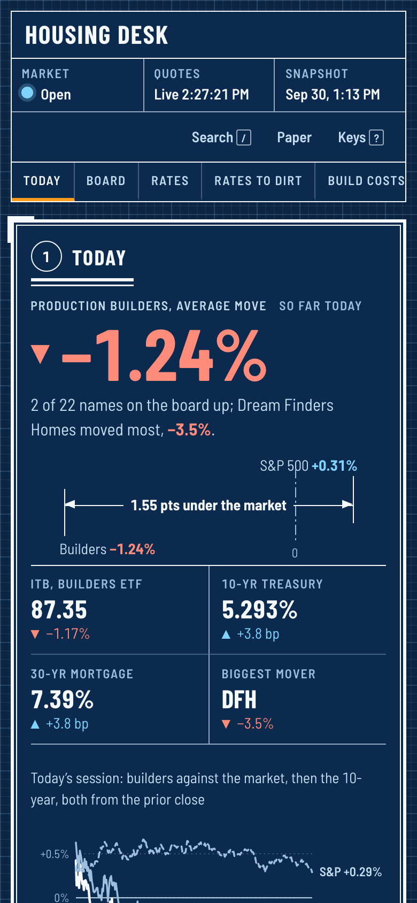
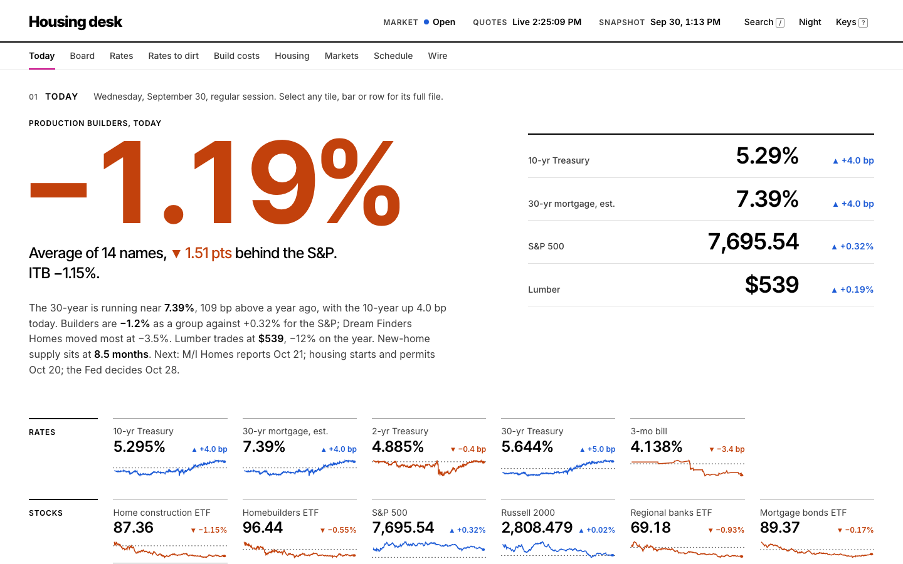
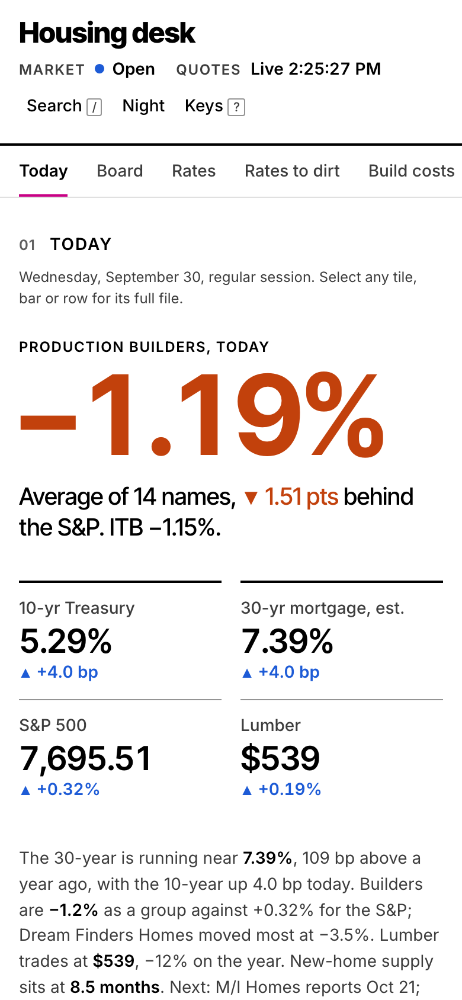
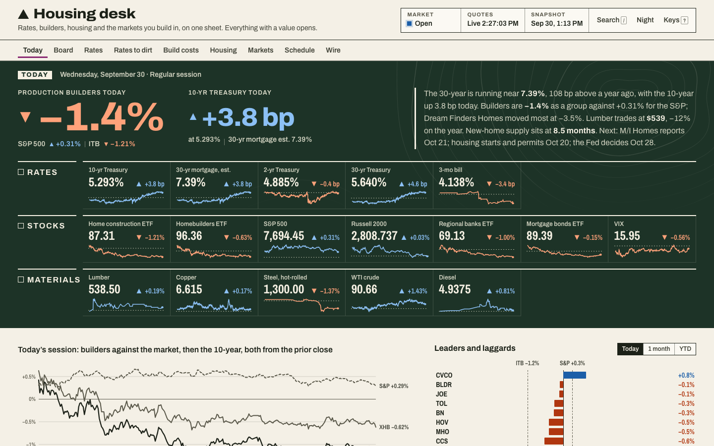
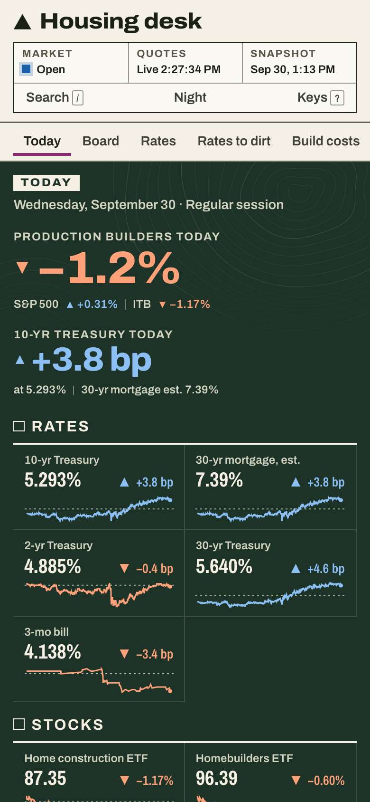

Each one is fully working: live quotes, every tile and row opens its detail panel. Tap "Open it" to try one, then pick a number.
Dark market screen. A giant builders' move, six key figures, and the session chart beside it. Monospace numbers, amber for anything you can tap.


FT/WSJ markets page. A live serif headline, the lead chart, and a market-data column in place of tiles. Warm newsprint, true black ink.


Your plan-sheet look with real contrast. White linework on deep navy, the builders' move measured as a dimension line against the S&P. Tap Paper for white bond.


Pure white and black with no boxes. A huge builders' move, then four key figures in a clean column. Hierarchy comes from size and space alone.


Limestone paper with a deep-forest “today” band: the builders' move and the 10-yr in bp, faint contours, map-legend styling.

